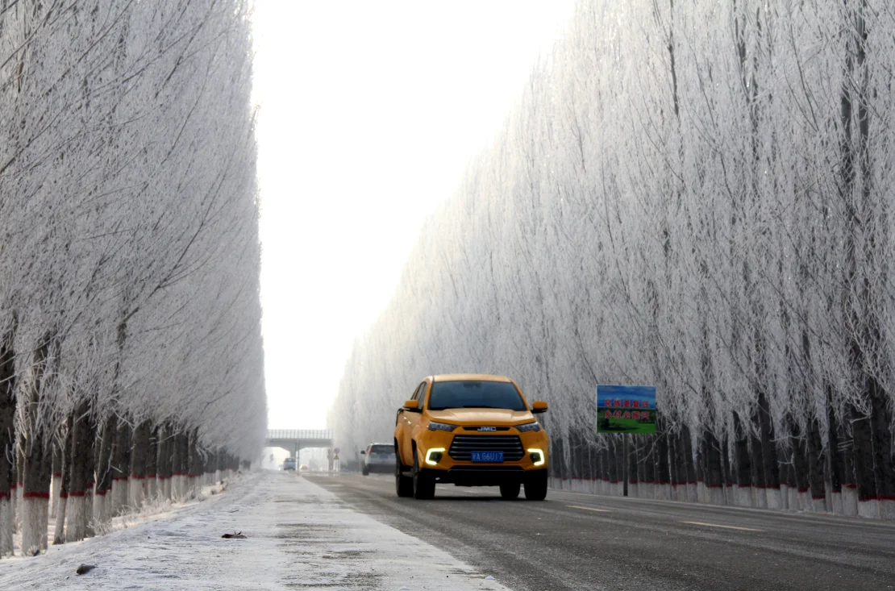

Heavy snow, rain threaten travel chaos during China’s Lunar New Year

Hong Kong:
Heavy snow and rain is forecast to hit central and eastern China in the coming days, threatening travel plans for hundreds of millions of Chinese workers heading home for the Lunar New Year.
Also known as the Spring Festival, the Lunar New Year holiday traditionally sees the nation pause as migrant workers pile onto trains, planes and buses to go home to see their family.
Forecasters warn the extreme winter weather could cause mass disruption, with state broadcaster CCTV predicting the “most complex weather” since early 2008, when heavy snow affected more than 67 million people.
However, Xu Jun, chief forecaster from the Central Meteorological Observatory, told CCTV the forecast snowfall won’t be as heavy or widespread as that experienced around the holiday season 16 years ago.
“Its extreme nature comes from the fact that it is a rare weather event with great intensity and impacts,” she said. In Zhengzhou, a central eastern city, authorities canceled some high-speed train services and said they would order trains to operate at reduced speed due to the blizzards and rain.
Frost lines the side of a road in China's far western Xinjiang region.
Frost lines the side of a road in China's far western Xinjiang region. VCG/Getty Images
Freezing rain
At least five provinces - including Henan, Hubei and Anhui - will be hit by freezing rain, CCTV reported, which is likely to further complicate travels.
Freezing rain: At least 10 provinces - including Hebei, Henan, Shandong, Liaoning and Hubei - are anticipating blizzards until the start of next week, just days before the Lunar New Year begins next Saturday, CCTV said, citing China’s Central Meteorological Observatory.
“The rain and snow overlap with the peak period of Spring Festival travel. This has posed risks to safe (travel) and brought inconvenience to the transportation,” weather expert Wang Lijuan, from China Meteorological Administration, told CCTV.
The Central Meteorological Observatory has already issued a blizzard warning for some of the affected region, with snow running up to 5 centimeters (nearly 2 inches) thick in some areas, according to its Chinese social media account.
The weather phenomenon refers to raindrops being frozen into ice droplets upon contact with surfaces after they hit the ground, which could damage electricity cables and make roads slippery, China Meteorological Administration warned in a Weibo post, urging drivers to slow down.
Xu, from the Central Meteorological Observatory, told CCTV freezing rain could affect many provinces over an area as wide as 43,000 square kilometers (16,600 square miles).
Blizzards struck many parts of China in early 2008, damaging power lines and blocking highways and railways, leaving hundreds of thousands of travelers stranded.
At least 24 people died while 827,000 people were evacuated in 14 provinces.
China, like many other parts of the world, has been hit by extreme weather in recent years.
Its lowest ever temperature was recorded last January, when Jintao town in Mohe, northeastern Heilongjiang province, dropped to -53° C.
Last summer, China recorded its hottest year on record and was also hit by the heaviest rainfall in decades, causing flooding and billions of dollars in damage.
Non-Stop Visits By Local Travellers To Famous Destinations In Kalaw Township
By Admin on 22 September 2023
The visiting of local travellers has been non-stop in famous tourist attraction sites of Kalaw township in Shan State, according to car rental services in Kalaw. “There are loads of places to visit in our town. Popular tourist destinations in Kalaw are Byake Taung, view of sea of clouds and Palaung Hill’s viewpoint where Palaung ethnic people are living. There are non-stop travellers,” said an official from a car rental service in Kalaw.
!.....
citizens, especially in well-developed countries, often utilize their spare time for reading. There is one thing that almost everybody can do without costing a fortune. This is nothing else but just reading. Truly, reading may not only be the first step towards learners’ study on the subject matter but also be beloved by nearly all from every corner of the globe. It will often be seen that citizens in well-developed countries throughout the world usually make good use of their spare time reading.!.....
Myanmar’s Seaborne Exports Surpass US$7 Billion By 19 January
By Admin on 22 September 2023
trade value reflected a drop of $2.376 billion compared to the corresponding period of last FY. Myanmar’s seaborne exports with international trade partners amounted to US$7.136 billion as of 19 January of the current financial year 2023-2024, while its imports surpassed exports with $10.66 billion, totalling $17.8 billion, the Ministry of Commerce’s statistics indicated.billion as of 19 ports surpassed exports with $10.66 billion, totalling $17.8 billion, the Ministry of Commerce’s statistics indicated.
!.....